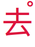
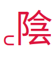
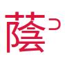
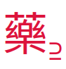

Font test page
Ideographic tone marks: four tones
These tone marks are combining characters,
and should appear as circles on one of the four corners of a character
(representing the four tones of Middle Chinese).
| Code point |
Description |
Reference image |
Your browser |
| U+302A |
Classical marker for level tone (平聲) |
 |
平〪 |
| U+302B |
Classical marker for rising tone (上聲) |
 |
上〫 |
| U+302C |
Classical marker for departing tone (去聲) |
 |
去〬 |
| U+302D |
Classical marker for entering tone (入聲) |
 |
入〭 |
Modifier letters: eight tones
These modifier letters are not combining characters;
the markers for level (平) and rising (上) are placed manually on the left
whilst those for departing (去) and entering (入) are placed on the right.
The modifier letters for the dark/feminine (陰) or upper tones
should appear like semicircles.
Those for the light/masculine (陽) or lower tones
should appear likewise but with an additional underline.
| Code point |
Description |
Reference image |
Your browser |
| U+A700 |
Modifier letter for dark-level (陰平) |
 |
꜀陰 |
| U+A701 |
Modifier letter for light-level (陽平) |
|
꜁陽 |
| U+A702 |
Modifier letter for dark-rising (陰上) |
|
꜂飲 |
| U+A703 |
Modifier letter for light-rising (陽上) |
|
꜃癢 |
| U+A704 |
Modifier letter for dark-departing (陰去) |
 |
蔭꜄ |
| U+A705 |
Modifier letter for light-departing (陽去) |
|
讓꜅ |
| U+A706 |
Modifier letter for dark-entering (陰入) |
|
泣꜆ |
| U+A707 |
Modifier letter for light-entering (陽入) |
 |
藥꜇ |